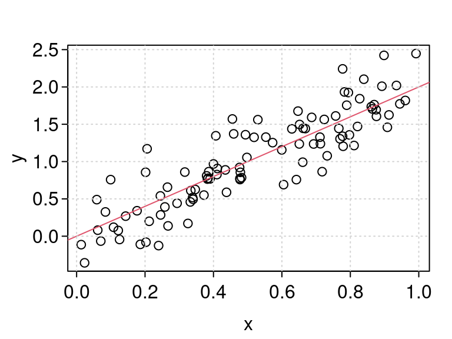
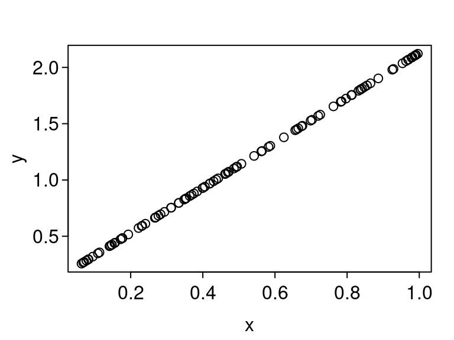

Assertions and Unit Tests
David Gerard
2022-01-25
Learning Objectives
- Assertions
- Unit Tests
- Chapter 12 from R Packages
A Working Example
For this lecture, let’s suppose that we want to create a package to simulate data from the normal simple linear regression model.
Recall that the normal simple linear regression model is of the form \[\begin{align} Y_i &= \beta_0 + \beta_1X_i + \epsilon_i\\ \epsilon_i &\sim N(0,\sigma^2) \end{align}\]
Here,
- \(Y_i\) is the value of the response variable for observation \(i\).
- \(X_i\) is the value of the predictor variable for observation \(i\).
- \(\beta_0\) is the \(y\)-intercept,
- \(\beta_1\) is the slope (values that are 1 \(x\) larger tend to be \(\beta_1\) \(y\) larger, on average).
- \(\epsilon_i\) is the error for observation \(i\). Assumed to be a random variable with a normal distribution with mean 0 and variance \(\sigma^2\).
If we had the \(X_i\)’s, \(\beta_0\), \(\beta_1\), \(\sigma^2\), and the sample size \(n\), then it would be easy to simulate under this model.
n <- 100 sigma2 <- 0.1 beta0 <- 0 beta1 <- 2 x <- runif(n) eps <- rnorm(n, mean = 0, sd = sqrt(sigma2)) y <- beta0 + beta1 * x + eps plot(x, y) abline(a = beta0, b = beta1, col = 2) grid()
There are many design considerations for simulating under this model:
- Do we simulate the \(X\)’s or do we obtain these values from the user? If we simulate them, how do we do this? Should we allow the user to do both?
- Do we simulate \(\beta_0\) and \(\beta_1\)? Do we allow the user to input a distribution for these effect sizes?
- Do we simulate \(\sigma^2\)? This is often difficult for the user to choose, so maybe there is a more intuitive specification for it?
Let’s start with a basic function where we assume the user has provided everything. We’ll expand on this later.
#' @title Simulate SLR #' #' @description Simulate response values from the normal simple #' linear regression model. #' #' @param n The sample size #' @param x The values of the predictor variable for the \code{n} #' individuals. #' @param beta0 The y-intercept. #' @param beta1 The slope. #' @param sigma2 The error variance. #' #' @return A vector of length n. The values of the response variable. #' #' @author David Gerard #' #' @examples #' n <- 100 #' x <- runif(n) #' beta0 <- 0 #' beta1 <- 2 #' sigma2 <- 0.5 #' y <- simreg(n = n, x = x, beta0 = beta0, beta1 = beta1, sigma2 = sigma2) #' plot(x, y) #' abline(a = beta0, b = beta1) simreg <- function(n, x, beta0, beta1, sigma2) { eps <- stats::rnorm(n = n, mean = 0, sd = sqrt(sigma2)) y <- beta0 + beta1 * x + eps return(y) }
Assertions
One hallmark of good programming is to return an error as early as possible.
For example, what if the user provided an incorrect input
n <- 100 sigma2 <- 0.1 beta0 <- 0 beta1 <- 2 x <- runif(n) y <- simreg(n = 1, x = x, beta0 = beta0, beta1 = beta1, sigma2 = sigma2)It ran OK, but there was no error even though
n = 100. What gives? Let’s look at a plot.plot(x, y) So R is recycling the one error term that it simulated. It would be nice to catch this so that it doesn’t hurt a user down the road.
An assertion is a statement during your code that should always evaluation to
TRUE. If an assertion evaluates toFALSEthen this throws an error.In R, the base assertion is
stopifnot().x <- 10 stopifnot(x == 10) stopifnot(x > 20)## Error: x > 20 is not TRUEIf you want to be more explicit about your errors, you can put
stop()inside an if-then statement.if (x != 10) { stop("x is not 10") }For user-facing functions, I like to check user arguments for validity in R.
- Other languages force argument validity, but R, e.g., allows users to insert characters for numeric arguments!
Let’s try this out for
simreg().simreg <- function(n, x, beta0, beta1, sigma2) { ## Check input stopifnot(length(x) == n) ## Simulate y eps <- stats::rnorm(n = n, mean = 0, sd = sqrt(sigma2)) y <- beta0 + beta1 * x + eps return(y) }Then we get an error that tells us we made a mistake. This could save a user a huge amount of debugging time down the road.
y <- simreg(n = 1, x = x, beta0 = beta0, beta1 = beta1, sigma2 = sigma2)If you just don’t like the behavior, but don’t want to kill the program, use
warning().simreg <- function(n, x, beta0, beta1, sigma2) { ## Check input if (length(x) != n) { warning("n not equal to length(x). Recycling error terms.") } ## Simulate y eps <- stats::rnorm(n = n, mean = 0, sd = sqrt(sigma2)) y <- beta0 + beta1 * x + eps return(y) } y <- simreg(n = 1, x = x, beta0 = beta0, beta1 = beta1, sigma2 = sigma2)Exercise: Add assertions to check:
- That
n,beta0,beta1, andsigma2are all length 1. - That all of the variables are numerics.
- That
sigma2is non-negative.
- That
You should also place assertions in the middle of code (not just checking user inputs) in cases where you want to be doubly sure that your code is working.
E.g. I often place an assertion during optimization scripts to make sure that the objective function is not decreasing each iteration.
Unit Tests
So far your work flow has been to iteratively:
- Write a function.
- Load the package into memory with
devtools::load_all() - Play around with it, testing it on your own.
This is great, but informal. If your code changes, those informal checks you ran might no longer work, and you wouldn’t know.
A unit test is a stored test that you can rerun automatically.
Your workflow when coding using unit tests is to:
- Modify code or tests.
- Test package with
devtools::test(). This will run all unit tests. - Repeat until all tests pass.
Writing unit tests is a fair amount of work but it is worth it because:
- If your code changes in a breaking way, your unit tests will alert you. This makes you more confident to make robust changes to your code.
- I often find bugs while I create unit tests. Describing what I expect and testing out corner cases formally lowers the chance of a bug ending up in your final product.
{testthat}is one of the R package that implements unit tests in R. The second most popular one is probably{RUnit}.library(testthat) local_edition(3)## Setting deferred event(s) on global environment. ## * Will be run automatically when session ends ## * Execute (and clear) with `withr::deferred_run()`. ## * Clear (without executing) with `withr::deferred_clear()`.To use
{testthat}, runusethis::use_testthat()This will have created a new folder “tests”. Inside this folder is an R script “testthat.R” and another folder “testthat”.
. ├── DESCRIPTION ├── NAMESPACE ├── R └── tests ├── testthat └── testthat.R“testthat.R” contains a few lines of code telling R to run all of your unit tests during package checking.
Unit tests will be in R scripts inside the “testthat” folder.
Expectation: Describes expected result of a computation.
- Correct value?
- Correct type (character/numeric/factor/logical)?
- Correctly produces an error when expected?
- All expectations are functions like
expect_*()
Test: A group of related expectations. Usually, a test tests only one function, or a couple tightly related functions. A test is created with
test_that().Testthat File: A collection of related tests.
Expectation
An expectation returns an error if a function or result is not what you expect.
In
{testthat}all expectations begin withexpect_.The first argument is the actual result of a function in your package. The second argument is the expected result.
The most common expectation is to test for equality with
expect_equal().x <- 10 y <- 10 expect_equal(x, y)You can specify the tolerance level so for items that are only approximately equal
expect_equal(10, 10 + 10^-8) expect_equal(10, 10 + 10^-5)## Error: 10 not equal to 10 + 10^-5. ## 1/1 mismatches ## [1] 10 - 10 == -1e-05expect_equal(10, 10 + 10^-5, tolerance = 10^-4)Make sure to only check for equality between two things. If you provide three unnamed arguments, the third one is interpreted as the tolerance. This is a common error that I have done many times.
## Bad expect_equal(10, 10, 10) ## Because this will also run OK (tolerance = 10) expect_equal(10, 2, 10)Use
ignore_attr = TRUEif your objects have different attributes and you just care about the numeric values (defaultexpect_equal()will throw an error):local_edition(3) ## not necessary for package names(x) <- "hello" expect_equal(x, y)## Error: `x` (`actual`) not equal to `y` (`expected`). ## ## `names(actual)` is a character vector ('hello') ## `names(expected)` is absentexpect_equal(x, y, ignore_attr = TRUE)The
local_edition(3)code makes it so my code chunks use the most recent{testthat}functions. You don’t need to worry about that in your package.{usethis}will automatically assume the third edition. You can explicitly use the third edition by adding the following to your DESCRIPTION file:Config/testthat/edition: 3expect_match()checks for a regular expression match.expect_match("hello", "ll") expect_match("helo", "ll")## Error: "helo" does not match "ll". ## Actual value: "helo"You can use
expect_warning()andexpect_error()to check that your functions error correctly.simreg <- function(n, x, beta0, beta1, sigma2) { ## Check input stopifnot(length(x) == n) ## Simulate y eps <- stats::rnorm(n = n, mean = 0, sd = sqrt(sigma2)) y <- beta0 + beta1 * x + eps return(y) } x <- runif(100) beta0 <- 0 beta1 <- 2 sigma2 <- 0.5 expect_error(simreg(n = 1, x = x, beta0 = beta0, beta1 = beta1, sigma2 = sigma2))It is recommended that you think harder about your unit tests, but you can just test for a non-error by using
expect_error()and settingregexp = NAexpect_error(simreg(n = length(x), x = x, beta0 = beta0, beta1 = beta1, sigma2 = sigma2), regexp = NA)expect_type()is tests for the type of the output ("double","integer","character","logical", or"list").local_edition(3) expect_type(1, "double") expect_type(1L, "integer") expect_type("1", "character") expect_type(TRUE, "logical")expect_s3_class()is used to test for the class of the object (e.g."data.frame","matrix","tibble","lm", etc..)y <- simreg(n = length(x), x = x, beta0 = beta0, beta1 = beta1, sigma2 = sigma2) lmout <- lm(y ~ x) expect_s3_class(object = lmout, class = "lm")expect_true()acts likestopifnot()except for unit tests instead of assertions.expect_true(3 == 3)Example: A common test for a simulation script is to see if estimators that we expect to work well on average do, indeed, work well on average. In the case of the simple linear regression model, we will check that, for large \(n\), the OLS estimates are reasonably close to the true value of \(\beta_1\)
x <- runif(1000000) beta0 <- 0 beta1 <- 2 sigma2 <- 0.5 y <- simreg(n = length(x), x = x, beta0 = beta0, beta1 = beta1, sigma2 = sigma2) lmout <- lm(y ~ x) expect_equal(coef(lmout)[[2]], beta1, tolerance = 0.01)Exercise: Write an expectation that the output is a numeric vector.
Test
Expectations go inside tests.
All
{testthat}tests are of the formtest_that("Human Readable Description", { ## Code running test })The first argument is a human-readable and informative description of what the test is accomplishing.
The second argument is is an expression where you put code.
- An expression is a multi-lined block of R code surrounded by curly braces
{}.
- An expression is a multi-lined block of R code surrounded by curly braces
Let’s put out a couple expectations in our test for
simreg().test_that("simreg() output is consistent", { set.seed(991) x <- runif(1000000) beta0 <- 0 beta1 <- 2 sigma2 <- 0.5 y <- simreg(n = length(x), x = x, beta0 = beta0, beta1 = beta1, sigma2 = sigma2) lmout <- lm(y ~ x) expect_equal(coef(lmout)[[2]], beta1, tolerance = 0.001) expect_equal(length(x), length(y)) })## Test passed 🥇Notice that I put two expectations in the same test. This is all connected to the output of
simreg(), so it makes sense to put them in the same test.Whenever a test generates something randomly, I like to set a seed for reproducibility.
- A random seed initializes the pseudorandom process. So any “random draws” in R will be the same if you set the same seed via
set.seed().
- A random seed initializes the pseudorandom process. So any “random draws” in R will be the same if you set the same seed via
If you find yourself printing stuff in the console when writing code, try writing a test instead.
I usually have a unit test open at the same time that I am coding a function.
Try to test a function in only one file. If you do change something and need to update your tests, that will make it easier to update.
Testthat File
A testthat file is just an R script that holds a few related tests.
You can create an R script for unit testing by typing
usethis::use_test()specifying the
nameof the R script.You should choose a one or two-word name (separated by dashes
-) that describes the collection of tests. E.g.usethis::use_test("sim-code")Exercise: Edit
regsim()so thatxis either a vector orNULL. IfNULL, then your function should simulatexfrom a standard normal distribution. You can check if a value isNULLviais.null(). The function should then return a list of length two with the simulatedxandyvalues. Create a new unit test for this new behavior.Exercise: In
simreg(), ifxis provided, thennis not really needed since it can be inferred fromx. Set the default ofnto beNULLand only require it ifxis not provided. Give a warning if bothxandnare provided, and throw an error if bothxandnareNULL. Write a unit test to check all of these new behaviors. Note: It is typical (and good practice) to put all arguments with defaults after all arguments without defaults.
Test Coverage
There are various ways to estimate what proportion of lines of your code are covered by unit tests.
The
{covr}package will do this for you withcovr::package_coverage()Running this is as far as we’ll go in this class.
If you have an open-source repo on GitHub, then you can use different some websites to automatically check your test coverage each time you push.
usethis::use_coverage(type = "codecov")- You would then set up your repo on https://codecov.io/.
- But using codecov for private repos costs money, so we won’t do this in our class.

This work is licensed under a Creative Commons Attribution-NonCommercial 4.0 International License.